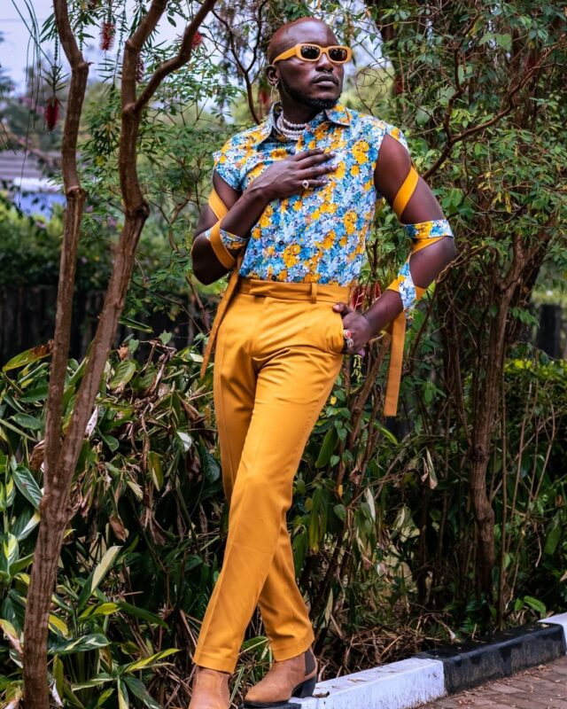

Sauti sol is a Kenyan Afropop band formed in Nairobi in 2005 by vocalist Bien Aime Baraza,Wilis Chimano and Savara Mudigi.
Sauti Sol's sound is a unique blend of Afro-pop and contemporary R&B. Their music often features traditional African instruments and modern beats
Initially an a capella group,guiltanist Polycarp Otieno joined before they named themelves Sauti sol.
This is my favorite band ,their unique style make it my fvaorite style.
Bien Aime Baraza was born in Nairobi,Kenya,on December 28, 1987.
He went to Upper Hill High School, where he met with his band members Willis Chimamo and Savara Mudigi and later,furthermore, to the United State International University for journalism and media studies, and graduated in 2011.
He joined Sauti sol in 2006 to pursue his musical career,Sauti sol was officially formed in 2005.
He was born on 25th May 1987.He is an alumunus of uppe Hill High School where the three began performing together and shortely after met Polycarp Otieno alias Fancy fingers.
After succefully completing high school,He joined Africa Nazareth University persuing a dregree in Commerce and Finance.
He was born on 19th july 1987.
He attended four different primary school before he completed his primary school education
He enrolled at Kakamega High school for his secondary school and later transfered to Upper High high school,Chimamo joined the University of Nairobi to persue Journalism and Media studies undergraduate degree.
Polycarp Otieno alias Fancy fingers was born on November 14, 1987.
He is renowned music producer,composer and a member of Sauti sol band
He is a soulful artist and authenentic brand from East Africa with the aim of empowering the Africa youth with knowledge and cultural appreciation through his music and initiatives.
The following links will open sauti sol favorite songs on youtube.